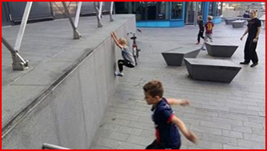
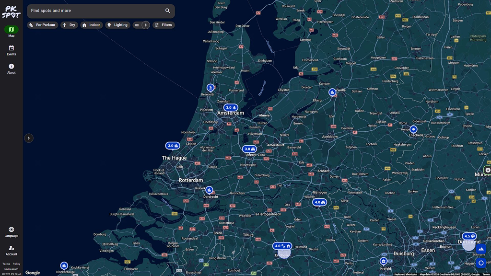
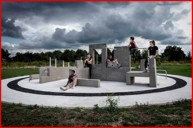
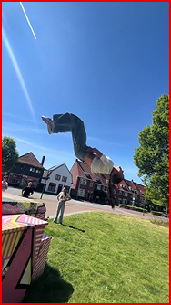

Locaties vinden

Freerun locaties vinden kan well lastig zijn, daarom deze pagina. veel ervaren freerunnenrs willen gewoon lekker een mooie plaats vinden om een parkourtje te doen of ergens hoog kunnen klimmen.

Go to LocationsAls je ervaren bent met freerunnen dan is het handig als je weet waar je naartoe kan gaan om leuke parkourtje te gaan doen en jezelf of je vrienden te laten zien wat je allemaal hebt geleerd, maar wees altijd nog voorzichtig, want als je het nog niet helemaal onder de knie hebt dan kan het erg mis gaan op harde grond.


Freerun locaties vinden kan well lastig zijn, daarom deze pagina. veel ervaren freerunnenrs willen gewoon lekker een mooie plaats vinden om een parkourtje te doen of ergens hoog kunnen klimmen.
Er zijn ook leuke plaatsen die je kunt bezoeken om 1 ding te doen, dit worden vaak gebruikt om videos van te maken en het op social media te zetten.

Er zijn veel locaties met allemaal hun eigen doel, eentje is voor over obstakels spring en de andere is om te kijken hoe hoog je durft te klimmen. Er zijn altijd plaatsten te vinden voor wat jij wilt uitvoeren of van een video van te kunnen maken.